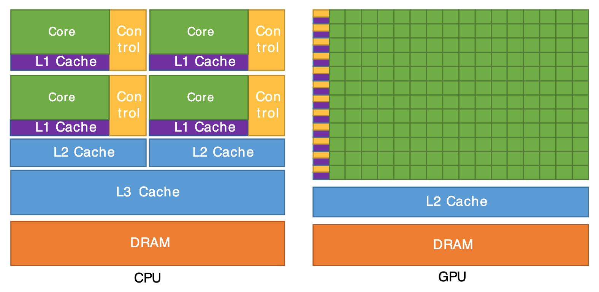

Code
my_map = map(lambda input: input**2, [(1-2), (3-5), (2-0)])
map_result = list(my_map)
map_result[1, 4, 4]DSAN 5500: Data Structures, Objects, and Algorithms in Python
\[ \begin{align*} x = \frac{-b \pm \sqrt{b^2 - 4ac}}{2a} = \frac{-7 \pm \sqrt{49 - 4(6)(-3)}}{2(6)} = \frac{-7 \pm 11}{12} = \left\{\frac{1}{3},-\frac{3}{2}\right\} \end{align*} \]
| \(\leadsto\) If code is not embarrassingly parallel (instinctually requiring laborious serial execution), | \(\underbrace{6x^2 + 7x - 3 = 0}_{\text{Solve using Quadratic Eqn}}\) |
| But can be split into… | \((3x - 1)(2x + 3) = 0\) |
| Embarrassingly parallel pieces which combine to same result, | \(\underbrace{3x - 1 = 0}_{\text{Solve directly}}, \underbrace{2x + 3 = 0}_{\text{Solve directly}}\) |
| We can use map-reduce to achieve ultra speedup (running “pieces” on GPU!) | \(\underbrace{(3x-1)(2x+3) = 0}_{\text{Solutions satisfy this product}}\) |
map(do_something_with_piece, list_of_pieces)my_map = map(lambda input: input**2, [(1-2), (3-5), (2-0)])
map_result = list(my_map)
map_result[1, 4, 4]reduce(how_to_combine_pair_of_pieces, pieces_to_combine)from functools import reduce
my_reduce = reduce(lambda piece1, piece2: piece1 + piece2, map_result)
my_reduce9map() and reduce() are “meta-functions”: functions that take in other functions as inputsdef add_5(num):
return num + 5
add_5(10)15def apply_twice(fn, arg):
return fn(fn(arg))
apply_twice(add_5, 10)20lambda):add_5 = lambda num: num + 5
apply_twice(add_5, 10)20When a program doesn’t work, each function is an interface point where you can check that the data are correct. You can look at the intermediate inputs and outputs to quickly isolate the function that’s responsible for a bug.
(from Python’s “Functional Programming HowTo”)
# Convert to lowercaseEasy case: found typo in punctuation removal code. Fix the error, add comment like # Remove punctuation
Rule 1 of FP: transform these comments into function names
Hard case: Something in load_text() modifies a variable that later on breaks remove_punct() (Called a side-effect)
Rule 2 of FP: NO SIDE-EFFECTS!
remove_punct()!!! üòé ‚è±Ô∏è = üí∞The title relates to a classic Economics joke (the best kind of joke): ‚ÄúAn economist and a CEO are walking down the street, when the CEO points at the ground and tells the economist, ‚Äòlook! A $20 bill on the ground!‚Äô The economist keeps on walking, scoffing at the CEO: ‚Äòdon‚Äôt be silly, if there was a $20 bill on the ground, somebody would have picked it up already‚Äô.‚Äù

